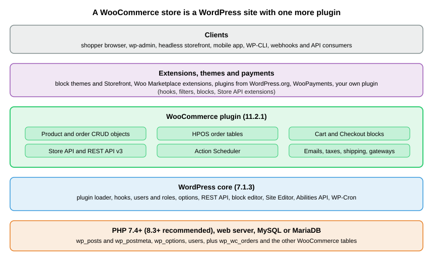
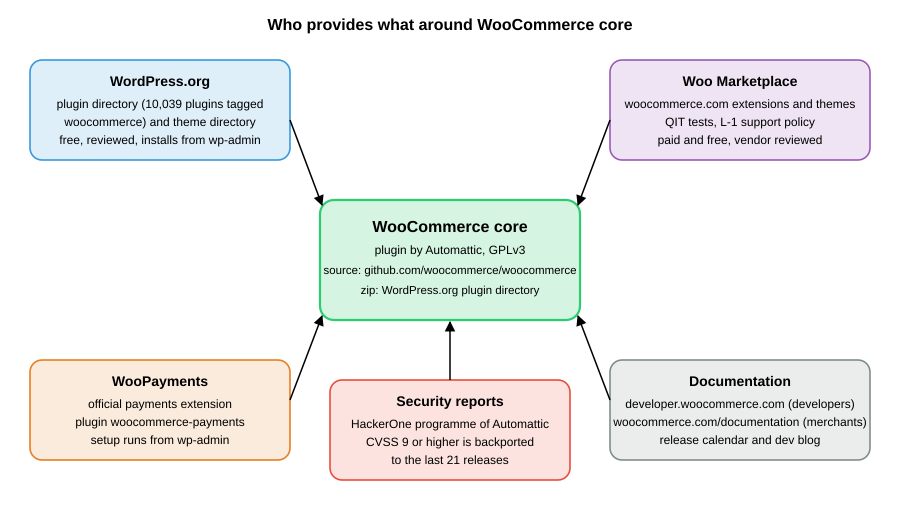

WooCommerce Overview
|
This content was generated with the assistance of AI and should be verified against the official documentation before being relied on in production. |
This subsection documents how to build on WooCommerce, the e-commerce plugin for WordPress. It was written against
WooCommerce 11.2.1 (published 2026-10-09) running on WordPress 7.1.3 (2026-10-06), with PHP 8.3.36 and MariaDB 11.8.9,
the stack on which every command and example was run. WooCommerce 11.2.0 (2026-10-07) was a security release, and the
next line, 11.3, was in beta (11.3.0-beta.1, 2026-10-26) with its final release planned for the week of 2026-11-09.
Every fact was checked on 2026-10-27. The
Versions, Requirements and Release Cadence page
says which versions are supported, how often they ship and what each source claims about the minimum PHP, WordPress and
database versions.
This page explains what WooCommerce is and how it is organised, the resources around it, the WordPress concepts that the other pages take for granted, how the pages fit together as a learning path, and then lists every page. It is the entry point of the WooCommerce subsection of the E-commerce section, which also covers Shopify, PrestaShop and Magento; a side-by-side view is on the Comparison page.
What WooCommerce is
WooCommerce is a plugin. It is not a standalone shop application: it is a folder of PHP, JavaScript and templates that
WordPress loads like any other plugin, and it adds products, carts, checkout, orders, taxes, shipping, payment gateways,
emails, reports and APIs to a WordPress site. The plugin is developed by Automattic and a community of contributors in the
public repository github.com/woocommerce/woocommerce, it is licensed under the
GPL (the readme.txt of 11.2.1 declares GPLv3), and its official distribution channel is the WordPress.org plugin
directory, where it is installed with one click from wp-admin or with wp plugin install woocommerce.

The figure shows the consequence that shapes the whole subsection: everything below the WooCommerce layer is WordPress.
A request is served by PHP and a web server, WordPress loads its core and then every active plugin, and WooCommerce
registers its post types, tables, routes, blocks and hooks while loading. Extensions, themes and payment plugins then
change WooCommerce by attaching to the same hooks. The database is shared: WordPress tables such as wp_posts,
wp_options and wp_users sit next to WooCommerce tables such as wp_woocommerce_sessions, and since the High-Performance
Order Storage (HPOS) feature orders live in wp_wc_orders and its sibling tables instead of in wp_posts.
That architecture has consequences that shape this subsection.
-
You extend it with hooks, not by editing it. WordPress calls it the plugin API: actions and filters that any plugin or theme can attach callbacks to. WooCommerce fires hundreds of them, and a customisation is almost always a small plugin of your own. The Hooks: Actions and Filters and Extension Development pages are the centre of the developer path.
-
WordPress releases and WooCommerce releases are separate. WooCommerce ships a minor release about every five weeks, WordPress a few times a year, and a version of WooCommerce supports a window of WordPress versions. Compatibility is a first-class concern: plugin headers, the L-1 support policy and compatibility declarations appear on several pages.
-
Operations are your job on a self-hosted store. Hosting, PHP and database versions, backups, caching, cron and security updates belong to the merchant or the agency unless a managed host takes them over. The Performance and Security page covers the production side.
-
The checkout moved from PHP templates to blocks. New stores get the Cart and Checkout blocks by default, and the PHP hooks and filters that books from the classic era use for the checkout page do not change the block. Pages that touch the checkout say which of the two they describe and give the block replacement.
-
The platform moves, and so do the books. The WooCommerce books of 2015 and 2018 describe orders stored as
shop_orderposts with post meta, shortcode-based cart and checkout pages, the Storefront theme withstorefront_*hooks, WooThemes addresses and PHP 5. This subsection flags those approaches as legacy wherever a reader still meets them in an older store and gives the current replacement.
For market context, W3Techs reports WooCommerce on 7.8% of all websites and 47.4% of the sites whose e-commerce system it can detect (checked 2026-10-27), and Store Leads counted 4,321,090 live WooCommerce stores against a peak of 4,776,386 in the second quarter of 2024. The WordPress.org plugin page shows more than 7,000,000 active installations (the directory reports a rounded band) and 470,682,885 downloads, and the repository had 10,569 stars and 2,148 contributors. The Comparison page carries the dated figures and their sources.
The project ecosystem
WooCommerce is spread over several sites that belong together. The table lists the resources used throughout this subsection and what each is for.

| Resource | What it is | Notes |
|---|---|---|
The official release channel of core: version, download zip, changelog, support forum and the rounded active-installation band. |
Pre-releases such as |
|
The developer documentation (extensions, block development, themes, APIs, best practices, contribution and release policies), the release calendar and the developer blog. |
The pages under |
|
The merchant documentation: setup, server requirements, payments, shipping, extensions. |
Some pages lag behind the code; the server requirements page still names WooCommerce 10.8, see the Versions page. |
|
The catalogue of extensions and themes sold or distributed through woocommerce.com, with vendor review. |
A submission must pass the QIT managed tests and support the two latest major versions of WordPress and WooCommerce, see the Testing, Deployment and Marketplace page. |
|
The official payments extension from Automattic (plugin slug |
Onboarding needs an account and cannot be run in a throw-away local store, so the Payment Gateways page documents it without executing it. Fees are published on woocommerce.com. |
|
WordPress.org theme directory and the Storefront and Purple themes |
Free themes, including block themes. Storefront 4.6.2 (2025-12-09) is the classic reference theme; Purple is a block theme for recent WooCommerce. |
See the Themes page for the choice between block and classic themes. |
Managed testing service for extensions: activation, API, end-to-end, security, PHP compatibility, malware and validation tests. |
Needs a Woo account; documented, not run. |
|
The private channel for vulnerability reports; never report a vulnerability in a public issue. |
The security support policy is explained on the Versions and Performance and Security pages. |
|
The command line and the HTTP interface of WordPress, which WooCommerce extends with |
The WC-CLI and REST API pages build on them. |
Community help comes from the support forums on WordPress.org, GitHub issues, hosting providers and agencies. Merchants who buy extensions or WooPayments get support from the vendor. The core plugin itself is provided without warranty, as its GPL licence states.
WordPress concepts used in this subsection
The table gives the minimum that the WooCommerce pages assume and points to the official WordPress developer handbook; the WordPress section of this site covers each concept in depth. A reader who builds WordPress sites can skip it.
| Concept | What it means for WooCommerce | Official reference |
|---|---|---|
Plugin and |
A plugin is a PHP file whose comment header ( |
|
Hooks: actions and filters |
An action runs code at a moment; a filter receives a value and returns a changed one. Both take a priority. Almost every WooCommerce customisation is a callback on a |
|
Options and post meta |
|
|
Post types and taxonomies |
Products are posts of type |
|
Users, roles and capabilities |
Customers are WordPress users with the |
|
Nonces |
Short-lived tokens that tie a request to a user and an action. The Store API requires one (or a |
|
WP-Cron |
Pseudo-cron that runs when the site receives a visit. WooCommerce schedules its background work on Action Scheduler, which uses it as one of its runners. |
|
The REST API and Application Passwords |
WordPress serves JSON under |
|
Blocks, the block editor and the Site Editor |
Pages are made of blocks stored as HTML comments in post content. WooCommerce ships product, cart, checkout and mini-cart blocks. Block themes can be edited in the Site Editor, and what is saved there is stored in the database and overrides the theme files. |
|
|
The settings and styles file of a block theme: palette, typography, spacing, layout. It generates CSS custom properties such as |
|
WP-CLI |
The |
|
Abilities API |
The registry of machine-readable abilities ( |
A few WordPress terms recur: mu-plugins are plugins loaded automatically from wp-content/mu-plugins, multisite is a
network of sites on one installation, and a child theme inherits a parent theme’s templates. The pages that need them
explain them where they first appear.
A first look at the running store
The commands below were run against the local test site (WordPress 7.1.3, WooCommerce 11.2.1, a block theme that is a child of Twenty Twenty-Five, HPOS enabled) with WP-CLI 2.12.0. They only read data.
The command line
wp core version
wp plugin get woocommerce --fields=name,version,status
wp wc hpos status
wp eval 'echo wp_is_block_theme() ? "block theme" : "classic theme";'The outputs were 7.1.3, a table with name woocommerce, version 11.2.1 and status active, the HPOS report
(HPOS enabled?: yes, Compatibility mode enabled?: no, Unsynced orders: 0) and block theme. HPOS was not on by default
in a scripted install: on a fresh site installed with WP-CLI, wp wc hpos status first reported no, and
wp wc hpos enable created the tables. The HPOS page shows how to check the setting and enable it.
The REST namespaces
WordPress lists every namespace its REST API serves at the root of /wp-json/. WooCommerce adds several, which is the quickest
way to see which of its APIs a site exposes.
curl -s http://localhost:8081/wp-json/ | python3 -c "import json,sys; print([n for n in json.load(sys.stdin)['namespaces'] if 'wc' in n])"Source: WordPress REST API handbook
The list on the test site was wc/v3, wc/v1, wc-admin, wc-analytics, wc/store, wc/store/v1, wc/private, wc/v2,
wc-admin-email, wc-push-notifications, wc-telemetry and wccom-site/v3, including wc/pos/v1/catalog. wc/v3 is the administrator API authenticated with consumer keys, and wc/store/v1 is the shopper API
(see the REST API and Webhooks and
Store API pages). The wc/v1 and wc/v2 namespaces are older versions of the administrator API, and the Legacy REST API was removed from
core in 9.0.
A plugin of your own
A customisation is a plugin. This small one, pocket-coffee-overview, is the smallest useful shape: a header that declares
what it needs, and a WP-CLI command that prints the versions in play. The Versions page explains each header line.
<?php
/**
* Plugin Name: Pocket Coffee Overview
* Description: Prints the platform versions Pocket Coffee runs on.
* Version: 0.1.0
* Requires at least: 7.0
* Requires PHP: 7.4
* Requires Plugins: woocommerce
* License: GPL-2.0-or-later
* Text Domain: pocket-coffee-overview
*/
defined( 'ABSPATH' ) || exit;
if ( defined( 'WP_CLI' ) && WP_CLI ) {
WP_CLI::add_command(
'pocket-coffee overview',
function () {
global $wp_version;
WP_CLI::line( 'wordpress ' . $wp_version );
WP_CLI::line( 'woocommerce ' . ( defined( 'WC_VERSION' ) ? WC_VERSION : 'not loaded' ) );
WP_CLI::line( 'php ' . PHP_VERSION );
}
);
}After copying the folder into wp-content/plugins and running wp plugin activate pocket-coffee-overview, the command
wp pocket-coffee overview printed 7.1.3, 11.2.1 and 8.3.36 on three lines. The Requires Plugins: woocommerce line
is the WordPress plugin dependency header, added in WordPress 6.5, which makes WordPress ask for the required plugin
before this one can be activated.
What’s covered
Foundation
-
Versions, Requirements and Release Cadence: the release cycle, the L-1 policy, the security backport window, the WordPress, PHP and database requirements and the PHP 8.1 minimum from 11.6.
-
Installation and Local Environments: wp-admin and WP-CLI installs, WordPress Studio,
wp-env, the Playground CLI, the Beta Tester plugin and sample data. -
Store Setup and Launch: onboarding, settings tabs, products, shipping, taxes, payments, emails, a theme and extensions, security and a launch checklist.
Architecture and data
-
Architecture: plugin bootstrap,
src/againstincludes/, the container, packages, feature flags and how WooCommerce sits on WordPress. -
Hooks: Actions and Filters: priorities, removing callbacks, the classic hooks that blocks ignore and their replacements.
-
CRUD Objects and Data Stores:
WC_Data, getters and setters, meta, data stores and the query functions. -
HPOS: High-Performance Order Storage: tables, authoritative storage, sync, compatibility declarations and migrating postmeta code.
-
Action Scheduler: queues, async and scheduled actions, WP-Cron and conflicts from bundled copies.
Extending the platform
-
Extension Development: plugin headers, checking that WooCommerce is active,
create-woo-extension, compatibility declarations and uninstall. -
Settings and Admin Pages: the Settings API, tabs and sections and React admin pages.
-
Products and Product Types: simple, variable, grouped and external products, attributes, custom types and fields.
-
Product Collection and Blocks: the Product Collection block, registering collections and product filters.
Checkout, payments and fulfilment
-
Cart and Checkout Blocks: blocks against shortcodes, checkout processing, data stores, Slot and Fill and migrating classic customisations.
-
Additional Checkout Fields: the field API, locations, types, JSON Schema conditions and validation.
-
Store API: endpoints, nonce and
Cart-Token, rate limiting, schema extension and the difference from the REST API. -
Payment Gateways:
WC_Payment_Gateway, tokens, refunds, block payment methods and WooPayments. -
Shipping Methods: zones,
WC_Shipping_Method, rates and local pickup. -
Taxes, Coupons, Currencies and i18n: tax classes and rates, coupons, currencies and translations.
-
Subscriptions, Memberships and Bookings: the paid extensions, their hooks and the membership-site recipe.
Storefront and communication
-
Themes: Block and Classic: block themes,
theme.json, Woo block templates, template overrides and why they break. -
Emails:
WC_Email, templates and the block email editor.
APIs, tooling and data
-
REST API and Webhooks: v3 endpoints, keys and OAuth 1.0a, batch requests, webhooks and the removal of the Legacy API.
-
WC-CLI: the
wp wccommands, the HPOS commands and blueprints. -
Analytics: reports, extending columns and exports, and imports on Action Scheduler.
Production
-
Performance and Security: caching exclusions, cart fragments, the incident history, hardening and the security support window.
-
Testing, Deployment and Marketplace: PHPUnit, Playwright, QIT, Marketplace submission and deployment.
-
AI and MCP: the MCP Adapter, the Abilities API and agent tooling.
-
Cheat Sheet (PDF): a one-page summary of commands, hooks, endpoints and versions to download.
Cloud deployment
-
Cloud: Deployment Overview: what a store adds to the WordPress cloud architecture: shared state, webhooks that reach any pod and pages that are never cached.
-
Cloud: Database, HPOS and Sessions: sizing RDS from orders, the HPOS tables, the sessions table and why checkout never reads from a replica.
-
Cloud: Action Scheduler Workers on Kubernetes: moving the Action Scheduler queue to worker Deployments scaled by KEDA.
-
Cloud: Caching, CDN and Checkout: CloudFront behaviours and cookies that keep carts and checkout out of the cache, object cache groups and webhooks.
-
Cloud: Releases and Database Updates: the WooCommerce database update as a Helm pre-upgrade Job, extensions through the image and a GitHub Actions workflow.
-
Cloud: Migrating a Store from a Single Server: moving a store to EKS, RDS and S3 without losing or duplicating an order.
What could and could not be run
The commands and code in this subsection were run on the local WordPress 7.1.3 and WooCommerce 11.2.1 stack. Parts that need an account or a paid service were read from the official documentation and are described in plain prose on the page concerned: the browser-based setup wizard, WooPayments onboarding, paid Woo Marketplace extensions, QIT and Marketplace submission, and the 11.3 beta, which was not installed.
Reading path
The pages are ordered so that each depends only on earlier ones. Pick the track that matches the job, but read the foundation first.
| Stage | Goal | Pages |
|---|---|---|
1. Foundation |
Know the versions and requirements, get a working store and configure the business basics |
Versions, Requirements and Release Cadence, Installation and Local Environments, Store Setup and Launch |
2. Architecture |
Understand the plugin, its hooks, its data objects, order storage and background jobs |
Architecture, Hooks: Actions and Filters, CRUD Objects and Data Stores, HPOS: High-Performance Order Storage, Action Scheduler |
3. Extending |
Write an extension, give it settings and admin screens, and work with products |
Extension Development, Settings and Admin Pages, Products and Product Types, Product Collection and Blocks |
4. Checkout, payments and fulfilment |
Customise the block checkout, take payments, ship and tax orders |
Cart and Checkout Blocks, Additional Checkout Fields, Store API, Payment Gateways, Shipping Methods, Taxes, Coupons, Currencies and i18n, Subscriptions, Memberships and Bookings |
5. Storefront and communication |
Theme the shop and its emails |
|
6. APIs and data |
Integrate from outside, script the store and report on it |
|
7. Production |
Make it fast and safe, test it, ship it and connect agents to it |
Performance and Security, Testing, Deployment and Marketplace, AI and MCP |
8. Cloud deployment |
Run the store on many pods: database, workers, caching, releases and the move from one server |
Cloud: Deployment Overview, Cloud: Database, HPOS and Sessions, Cloud: Action Scheduler Workers on Kubernetes, Cloud: Caching, CDN and Checkout, Cloud: Releases and Database Updates, Cloud: Migrating a Store from a Single Server |
Typical routes: a merchant’s technical lead reads stages 1, 4 and 7 and keeps the cheat sheet nearby; a plugin developer reads stages 1 to 3 and then testing; a theme developer reads stages 1, 2 and 5; an integrator reads stage 1 and the API pages of stage 6 together with the Store API page; a team that books paid extensions reads the subscriptions page and the Marketplace section of the testing page; a team moving to Kubernetes on AWS reads stage 1, the cloud overview and then the other cloud pages in order, after the production page of stage 7. Some knowledge outside this subsection helps: PHP and Composer (see the PHP section), React for blocks and admin screens (see the React section), Docker (see the Docker section), OAuth for the authorisation flows (see the OAuth section), Playwright for end-to-end tests (see the End-to-end testing section) and the Model Context Protocol (see the MCP section).
Running example
All pages share one invented shop, Pocket Coffee, a small specialty-coffee seller. It has a "Single-origin beans"
product with three options (origin, grind and size) giving 18 combinations and SKUs such as PC-ETH-WHL-250, a "Starter
kit" product, a Coffee Club of members with 10% off beans, free shipping above 40 EUR in Spain, a flat 9.90 EUR rate for
the rest of the European Union, and Spanish and English storefronts. On WooCommerce each page builds its own part.
| Pocket Coffee need | Built with |
|---|---|
A running shop to develop against |
WP-CLI or the browser installer, Docker, WordPress Studio or |
The business basics: country, currency, taxes, payments, emails |
The settings tabs and the setup flow, see Store Setup and Launch |
18 bean variants, categories Beans and Equipment, the filterable origin attribute |
A variable product with attributes and variations, see Products and Product Types and Product Collection and Blocks |
Coffee Club discount on beans |
A role or user meta plus a pricing hook or coupon, see Hooks: Actions and Filters and Taxes, Coupons, Currencies and i18n |
Spain and EU shipping, a weight limit per parcel |
Shipping zones and methods, see Shipping Methods |
Spanish and English storefronts, EUR and USD |
Translations and currencies, see Taxes, Coupons, Currencies and i18n |
Roast date badge on the product page |
A small plugin with a product field and a hook, see Extension Development and Themes: Block and Classic |
"Order placed" log |
A hook on the order status transition and a background action, see Hooks: Actions and Filters and Action Scheduler |
A gift-message field at checkout |
The Additional Checkout Fields API, see Additional Checkout Fields and Cart and Checkout Blocks |
Reading products and creating an order from outside |
REST API v3, the Store API and |
Bibliography
Books
The books below were consulted for the topics they cover and rewritten for the current platform version; where a book describes an older release, the pages say so. No text, listing or figure is copied from them, and on any discrepancy the official documentation wins. Publisher pages that refused automated requests are marked (unverified); the ISBN, title, author and year were cross-checked against Open Library and Crossref.
-
Lisa Sims, Building Your Online Store With WordPress and WooCommerce, Apress, 2018, ISBN 978-1-4842-3845-5: publisher page (unverified).
-
Patrick Rauland, WooCommerce Cookbook, Packt, 2015, ISBN 978-1-78439-405-9: Packt subscription catalogue page (unverified).
-
Robbert Ravensbergen, Building E-Commerce Solutions with WooCommerce, 2nd edition, Packt, 2015, ISBN 978-1-78588-156-5: publisher page (unverified).
The full cited-URL bibliography of the E-commerce section is on the E-commerce section page; the online sources of this subsection are under References.
References
Cloud deployment
The sources below were consulted for the cloud deployment pages; each entry links to its official website.
WooCommerce
Amazon Web Services
-
Amazon CloudFront Developer Guide: Add custom headers to origin requests
-
Amazon CloudFront Developer Guide: Control the cache key with a policy
-
Amazon CloudFront Developer Guide: Manage how long content stays in the cache
-
Amazon CloudFront Developer Guide: Request and response behavior for custom origins
-
Amazon CloudFront Developer Guide: Use managed origin request policies
-
Amazon RDS User Guide: Restoring a DB instance to a specified time
-
Elastic Load Balancing: Edit attributes for your Application Load Balancer
-
Elastic Load Balancing: HTTP headers and Application Load Balancers